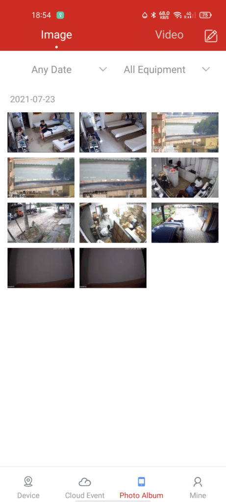

TSEye 深度盘点：一款安防监控 App 的完整能力地图
从设备接入方式到运动侦测告警，再到云端录像备份，TSEye 作为一款面向中小安防场景的监控 App，到底覆盖了哪些能力域？本文系统性梳理其功能边界、亮点与局限。
为什么值得认真盘点
安防监控领域早已不是"装个摄像头接个显示器"那么简单了。现在的用户不管是商铺老板还是家庭用户，都希望手机上随时能看实时画面、有事能自动告警、录像不会丢。TSEye官网就是瞄准这类需求做的一款配套 App——它不是摄像头硬件，而是把 IPC 网络摄像头和 NVR 录像机统一纳入手机管理的那一层软件。
这类 App 在行业里并不罕见，但 TSEye 有几个特点值得单独拎出来说：一是它对 Revotech、Revodata、Jennov 这些品牌的设备做了深度适配，出厂固件就内置对接；二是它同时覆盖了设备接入、实时预览、告警推送、云端存储四个核心环节，不是单一功能的工具。下面就按能力域逐个拆解。
设备接入：三种方式，总有一种能连上
把摄像头接入 App 是一切的开始。先从TSEye下载页面拿对应平台的安装包装好，它在这一步做了比较扎实的设计，给出了三种互不依赖的接入路径，覆盖了从"全新开箱"到"找不到二维码"再到"杂牌摄像头"的各种场景。
最常用的是局域网搜索。手机连到和摄像头同一个路由器的 Wi-Fi，打开 App 点"搜索本地设备"，几秒钟就能扫出同网段内所有兼容设备——列表里会显示 IP 地址、设备类型（IPC 还是 NVR）、具体型号，确认无误后输密码就能添加。这个方式的好处是不依赖任何标签或二维码，适合装在吊顶里、外壳磨损的老设备。

第二种是扫码接入，新设备开箱时外壳或说明书上都会有一个二维码，用 App 扫一扫直接配对。第三种是手动输入 ONVIF 信息，专门对付那些不是 Revotech 生态但支持 ONVIF 协议的杂牌 IPC——只要摄像头固件带 ONVIF，填个 IP 和端口号就能拉进来。这一条的意义在于打破了品牌绑定，用户可以混装不同品牌的摄像头，统一在一个 App 里管。
接入环节有两个容易踩的坑。一个是 5GHz Wi-Fi 隔离——不少路由器默认把 5GHz Wi-Fi 和有线网络隔开，手机连 5GHz 时搜不到有线 PoE 供电的摄像头，切到 2.4GHz 就好。另一个是出厂 IP 网段不匹配，比如摄像头默认 IP 是 192.168.1.108，但路由器网段是 192.168.64.x，这时候得先浏览器登摄像头后台改 IP，改完重启后 App 才能搜到。TSEye文档里有更详细的网段排查和 IP 修改操作步骤。
实时预览与回放：手机就是监控中心
设备接上之后，主界面就是一个多画面的实时预览墙。TSEye 默认支持四宫格同时预览，单画面双击放大，左右滑动切换其他摄像头。画质方面，5MP 的 IPC 能跑到 2592×1944，手机上看细节没问题——门口人脸、货架商品、车牌号码都能看清。
回放是另一个高频需求。NVR 本地硬盘里存着 7 到 30 天的循环录像，App 可以直接拉流回放，时间轴上拖动定位，支持快进慢放。这里有个小设计比较贴心：运动侦测触发的录像片段会自动高亮标记，不用手动翻一整天的录像找事件发生的时间点。
告警能力：从"画面变化"到"知道发生了什么"
如果说实时预览是"看"，那告警就是"不看的时候也知道发生了什么"。TSEye 把告警做成了一个分层的能力体系，从基础的运动侦测到云端存储，一步步往上堆。
运动侦测是最底层也是最核心的触发机制。摄像头持续分析画面，侦测区域内出现物体移动就触发告警。这里的关键设置有两个：侦测区域和灵敏度。区域要画得精准——只框门口、货架、车位这些真正要监控的地方，避开窗外树叶摇晃、宠物走动这些无关动态。灵敏度则是个权衡：调高了小虫子飞过都告警，调低了猫溜进门可能漏掉。TSEye 的 App 端支持远程画区域和调灵敏度，不用再跑到摄像头旁边用浏览器改配置。
告警触发后能联动四件事：App 推送告警消息、NVR 自动录像存档、摄像头蜂鸣器响、NVR 外部告警端口触发（接灯光或外部蜂鸣器）。其中自动录像这一步需要注意，得在 NVR 端单独配置"事件触发录像"计划，只在 App 里开运动侦测还不够——很多用户踩过这个坑，告警来了但没录下来，就是因为 NVR 那边的录像计划没勾上。
Cloud Events 是 TSEye 在告警上的进阶功能。它把告警触发的录像片段自动上传到云端，和 NVR 本地录像形成双重备份。为什么要这一层？因为硬盘故障、IPC 内存卡损坏、甚至设备被偷走这些情况都真实存在，本地录像一丢就什么都没了。云端存一份，不管是远程取证还是事后回放，手机上随时能打开，不用折腾远程拉流访问 NVR。
不过云端存储也有局限。免费版通常只保留 7 到 14 天的告警录像，要更长得付费升级。而且它只存告警录像，定时录像的全量片段还是在本地硬盘上。还有个容易忽略的点——每次告警录像上传云端会消耗上行带宽，如果家里或商铺的宽带上行只有几兆，告警频繁时上传会延迟甚至失败。
存储策略：本地硬盘是主力，云端是兜底
把本地和云端放在一起看，TSEye 实际上给了用户一个存储分层的思路。NVR 硬盘是主力，按容量决定循环覆盖周期（通常 7 到 30 天），存全量录像；Cloud Events 是兜底，只存告警触发的片段，可靠性更高但时长有限。两层同时开，成本上是硬件一次性投入加可能的云端订阅，但换来的是"设备端丢了还有云端"的安全感。
对于重要场景——比如商铺保险柜、家门口、停车场出入口——还建议加第三层保险：告警触发时手动把关键录像下载到手机本地。这一步虽然手动，但在真正需要取证的时候，手机里的文件比云端更可控。
短板也要说：依赖生态、固件绑定、弱密码风险
盘点了这么多能力，短板也得客观讲。
第一个短板是生态依赖。TSEye 对 Revotech、Revodata 这些自有品牌的设备支持最完善，出厂固件就内置对接，扫码即连。但对其他品牌的摄像头，能不能用 TSEye 管取决于对方固件有没有做适配——支持 ONVIF 的还能手动加，不支持的就只能换品牌或用厂商自家的 App。这不是 TSEye 的问题，而是整个安防行业的现状，但用户选设备时得把这个因素算进去。
第二个短板是弱密码风险。几乎所有 IPC 和 NVR 的出厂默认密码都是 admin/admin123，局域网里任何用弱密码扫描工具的人都能在几分钟内扫到你的摄像头并尝试登录。TSEye 本身做不了强制改密码的校验，只能靠用户自觉——添加设备后第一件事就是进后台改密码。
第三个短板是云端服务的不确定性。Cloud Events 的存储时长、免费额度、是否收费，这些策略随时可能调整。用户不能把云端备份当作唯一的存储手段，本地硬盘还是得留着。
什么样的人该用 TSEye
综合上面的盘点，TSEye 适合三类明确的人群。
第一类是中小型商铺经营者。便利店、奶茶店、小型仓库这类场景，一般装 4 到 8 台摄像头，预算不高、但需要手机随时看店、有事能告警、录像至少留两周。TSEye 的多画面预览、运动侦测告警推送、Cloud Events 云端备份这三个点刚好命中核心需求，接入流程也不复杂，不需要专业的安防知识就能搞定。
第二类是家庭安防用户。家门口装一台 IPC，客厅或阳台装一台，用 TSEye 统一管理。运动侦测告警能在快递员上门、陌生人靠近时推送到手机，出门在外也能实时看家里情况。Cloud Events 的云端存储对于家庭场景尤其有用——不怕小偷把摄像头一起搬走，云端还有一份告警录像。
第三类是需要远程运维的小型安防项目负责人。比如帮朋友或客户装了一套监控系统，后期要远程维护——调整侦测区域、改灵敏度、看告警记录。TSEye 的 App 端远程配置能力让这一切不用跑到现场，手机上几分钟就能改完。
如果你是专业安防从业者、需要管理几十上百路摄像头、需要精细的录像回放和权限管理，TSEye 可能就不够用了——那是专业 NVR 管理软件的领域。但对于上面三类人群，TSEye 把一个监控系统该有的核心能力都覆盖了，而且做得足够轻量、足够易用。整理这份盘点时参考的配套资料同步放在了 GitHub、Gitee 和 GitCode 三处，方便不同网络环境的朋友按需取用。